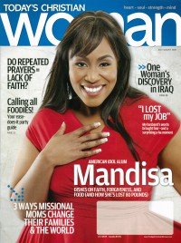
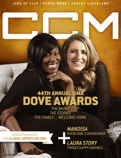
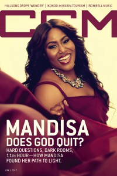

CMnexus: Contemporary Christian culture, music, and media.
|
|
Mandisa Lynn HundleyOn the cover|  | July 2009
Today's Christian Woman |
 | September 2013
CCM Digital |
 | 1 June 2017
CCM Digital | Media coverage:- Jul 2007 in CCM "True American Beauty", by Chad Bonham
- Sep 2007 in Ignite Your Faith "Forgiveness on American Idol", by Todd Hertz
- Nov 2007 in CCM "Story Behind the Song: Only The World", by Mandisa Lynn Hundley
- Jun 2009 in Charisma "Praise Him In The Storm: Mandisa Lynn Hundley", by Chad Bonham
- Jul 2009 in Today's Christian Woman "Mandisa Lynn Hundley"
- Feb 2011 in CCM Digital "Musicians Corner: In the Studio: Mandisa Lynn Hundley", by Andrew Greer
- May 2011 in CCM Digital "Mandisa Drops the Mask"
- Jul 2011 in CCM Digital "Black and White: Race, Diversity, Ministry, Music", by Caroline Lusk
- Dec 2012 in CCM Digital "Great Expectations", by Caroline Lusk
- Sep 2013 in CCM Digital "Overcome: Mandisa Celebrates the Battles that have Already Been Won", by Caroline Lusk
- 15 Apr 2014 in CCM Digital "Tour Spotlight: The Roadshow Tour, Chicago Theatre, Chicago, IL", by Andy Argyrakis
- 1 Jun 2017 in CCM Digital "Flipping The Switch", by David Daniels
Albums & reviews:2007: True Beauty2007: Christmas Joy2008: It's Christmas2009: Freedom2011: What If We Were Real2012: It's Christmas: Christmas Angel Edition2013: Overcomer2014: Get Up: The Remxies2017: Out of the Dark Award Summary (Nominations / Wins)Dove Awards2009 Dove Awards2010 Dove Awards2012 Dove Awards2014 Dove Awards2018 Dove Awards- Pop/Contemporary Album: Out of the Dark
Grammy Awards2009 Grammy Awards- Best Pop/Contemporary Gospel Album: Freedom
2011 Grammy Awards- Best Contemporary Christian Music Album: What If We Were Real
2013 Grammy Awards- Best Gospel/Contemporary Christian Music: "Overcomer"
- Best Contemporary Christian Music Song: "Overcomer"
- Best Contemporary Christian Music Album: Overcomer
Published articles:1 article credited in CCM: 2007. |